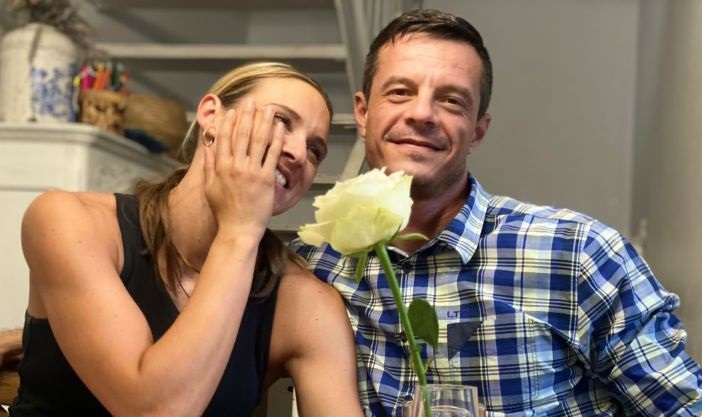

From Pastoral Care to Tech Innovation: My Journey
I'm Leon Pretorius, and for the past seventeen years, I've had the privilege
of serving the Christian community.
Now, as I transition into a new phase of my career, I want to move into
the technology sector.
Currently, I'm completing a rigorous full stack web and software
engineering bootcamp, equivalent to a higher certificate. This is just
the beginning of my journey—I'm eager to pursue a BSc in computer
science, driven by my fascination with artificial intelligence (AI) and
its potential for practical implementation. My objective is to focus on
integrating artificial intelligence with practical Internet of Things
(IoT) applications to improve service delivery and efficiency in
business, healthcare, and beyond.

Skills and Abilities
Since I'm transitioning to a new career we'll focus on
TransferableSkills:
Proficient in effectively communicating with various kinds of people.
Skilled in delivering clear messages during sermons, teachings, and
counseling sessions. Experienced in active listening, empathy, and
providing support to individuals facing personal challenges.
Adept at addressing and resolving complex interpersonal conflicts and
relational issues within the church community. Demonstrated ability to
mediate disputes, facilitate reconciliation, and foster unity among
congregation members. Skilled in navigating sensitive topics and finding
mutually beneficial solutions to difficult situations.
Collaborative team player with a history of working closely with church
staff, volunteers, and committees to achieve common objectives. Effective
in building cohesive teams, fostering a spirit of cooperation, and
leveraging collective strengths for ministry purposes. Experienced in
promoting unity and harmony within diverse groups of individuals with
varying perspectives and backgrounds.
Honed the ability to persevere and stay the course on principled
decisions, translating well into the ability to lead others. Experienced
in cultivating servant leadership principles and modeling Christ-like
behavior in all aspects of ministry.
Proficient in planning and executing various initiatives, from conception
to implementation. Skilled in coordinating volunteer teams, managing
logistics, and ensuring the smooth execution of church activities.
Experienced in overseeing projects while maintaining a focus on the
ministry's mission and objectives.
Flexible and adaptable to the changing needs and dynamics of the church
community. Resilient in the face of challenges and setbacks, capable of
adjusting strategies and approaches to meet evolving ministry needs.
Skilled in embracing innovation and creativity to address emerging issues
and opportunities in ministry contexts.
Dedicated and committed to serving the church community with excellence
and integrity. Demonstrated reliability, diligence, and a willingness to
go above and beyond to meet the spiritual needs of congregants. Proven
track record of sacrificial service, often working long hours and making
personal sacrifices for the sake of ministry.
Self-disciplined individual with a strong sense of commitment. Skilled in
managing time effectively, setting priorities, and balancing various
responsibilities within the context of ministry, family, and life. Capable
of maintaining personal spiritual disciplines.
Intrinsically motivated by a deep sense of purpose and passion. Proactive
in seeking opportunities for personal and professional growth, including
continued education and training. Driven by a desire to make a meaningful
impact in the lives of others.
Tenacious and steadfast in the face of challenges and opposition,
committed to persevering in ministry despite obstacles. Experienced in
navigating periods of adversity, uncertainty, and spiritual warfare with
courage and resilience. Capable of maintaining hope and trust in God's
faithfulness, even in the midst of trials and tribulations.
To be inncluded when I'm finished with the Bootcamp
To be inncluded when I'm finished with the Bootcamp
Plan to include a link to my GitHub repository once my Bootcamp capstone
projects are finalised.
Education
Institution: Christ Baptist Church Seminary
Date of Award: 28 November 2014
Location: South Africa
Accreditation: Accredited by the South African Qualifications Authority
(SAQA) and registered with the Department of Education as per the Higher
Education Act.
Coursework included extensive study in Biblical overview, expository
preaching, theology, hermeneutics, and pastoral ministry among other
subjects.
Institution: South African Theological Seminary (SATS)
Date of Award: 30 September 2022
Location: Johannesburg, South Africa
Accreditation: Accredited by the South African Qualifications Authority
(SAQA) and registered with the Department of Education as per the Higher
Education Act.
Institution: The School of Biblical Counseling, CCEF (Christian Counseling
& Educational Foundation)
Period: Fall 2019 to Summer 2021
Courses included Dynamics of Biblical Change, Counseling in the Local
Church, Helping Relationships, and Human Personality.
Successfully completed the program with notable grades, including a 94.26%
in Dynamics of Biblical Change and a 90.85% in Counseling in the Local
Church.
Platform: Codecademy
Completion Date: C# Nov 2023; JS Feb 2024
Key Skills Acquired: Mastered fundamental and advanced concepts in C# and
JavaScript, enhancing capabilities in software development and web
scripting. Developed a solid understanding of object-oriented programming,
data structures, and the development of interactive web applications.
Institute: Python Institute
Platform: Edube.org
Completion Date: Sept 2023
Key Skills Acquired: Gained proficiency in Python programming, focusing on
essential concepts such as variables, control flow, functions, and data
structures. Developed practical skills in scripting and automation, as
well as an understanding of Python's application in data analysis and
backend development.
Institution: HyperionDev
Credit-Bearing Course: This program is recognised as a credit-bearing
course, contributing to future academic endeavors and professional
qualifications.
Mode of Learning: Online Modules
Overview: Engaging in an intensive, blended bootcamp designed to instill
both the principles of full stack web development and software
engineering. The course structure includes detailed online modules
complemented by rigorous daily feedback from professional coders, ensuring
consistent progression toward final certification. Throughout the
bootcamp, developing skills in HTML, CSS, SCSS, JavaScript, Java, PHP,
Git, SQL, MongoDB, Node.js, React, and Express.
Mentorship: Benefiting from 1-on-1 mentorship, regular video chats, and
prompt feedback on coding submissions, enabling the creation of high-level
industry-standard programs and websites.
Professional Development: Upon completion, receiving continuous career
development support, including interview skills enhancement, CV
refinement, and access to the HyperionDev Careers community for developers
and recruiters.
Skills Gained: Fundamental and advanced programming concepts using
JavaScript, web development techniques in HTML, CSS, SCSS, advanced
JavaScript functionalities, including jQuery, JSON, and DOM manipulation,
in-depth understanding of software engineering principles through Java,
database creation and manipulation using T-SQL and MongoDB, full stack web
development using the MERN stack, professional portfolio creation,
alongside a detailed technical CV and LinkedIn profile optimization.
Institution: Eduvos
Planned Enrollment: September 2024
Duration: 3 to 5 years (Full-Time Online)
Focus: Specialization in Software Engineering with an emphasis on the
practical application of Artificial Intelligence and 4IR Technologies.
Objective: To deepen expertise in software development and engineering,
with a particular focus on harnessing AI technologies to innovate and
drive progress within the tech industry. This program’s blend of rigorous
theoretical understanding and practical proficiency in software
development, including AI Ethics and Privacy, Cloud Based Technologies,
and advanced programming, aligns with the ambition to become a leader in
AI-driven technology solutions.
Rationale for Pursuit: Upon completion of the current Full Stack Web &
Software Engineer Bootcamp, aiming to transition into this advanced degree
to further solidify foundation in software engineering. This will not only
expand technical skill set but also prepare for pioneering work in the
application of artificial intelligence within software solutions.
Anticipated Impact on Career Path: Completing this program will position
me at the forefront of technology innovation, enabling me to contribute
significantly to the development of AI applications that solve real-world
problems. Looking forward, I hope to gain opportunities to engage in AI
research, development, and deployment across various sectors, enhancing
the my capacity to impact the tech industry positively.
Work Experience
Duration: April 2002 – April 2003
Designation: Basic Ambulance Assistant (BAA)
Reason for leaving: To further my studies
Reference: Sister Glad (013) 656 5000
Duration: Feb 2005 – Apr 2007
Designations: Learner Steelmaker (Feb 2005 – Aug 2005), Section Controller
(Sept 2005 – Nov 2006), Process Controller (Nov 2006 - Apr 2007)
Reason for leaving: Was appointed as Lay Pastor to the Reformed Wesleyan
Methodist Church Middelburg congregation.
Reference: Andries Smith (013) 247 3244
Duration: 2007-2008
Designation: Lay Pastor
Reason for leaving: To commence studies at Glenvar Bible School
Reference: Rev. Fred Shaw (013) 282 7434
Duration: June 2008- June 2010
Designation: Student/Evangelist
Reason for leaving: To commence with Pastoral Studies
Reference: Dr. Danie Myburgh (Principal) 083 270 6013
Duration: June 2010-December 2010
Designation: Intern Pastor
Reason for leaving: To commence pastoral studies at Christ Seminary
Reference: Pastor Frikkie Smith 082 851 4530
Duration: 2011-2015
Designation: Student; Youth Leader; Cell Group Leader
Reference: Pastor Johann Odendaal 082 895 7764
Duration: Jan 2015 to May 2016
Designation: Director
Reason for leaving: Was appointed Pastor at Grace Fellowship Sasolburg
Duration: 2016 - Current
Designation: Pastor - Teacher
Reference: Jochen Theiss 082 655 3476